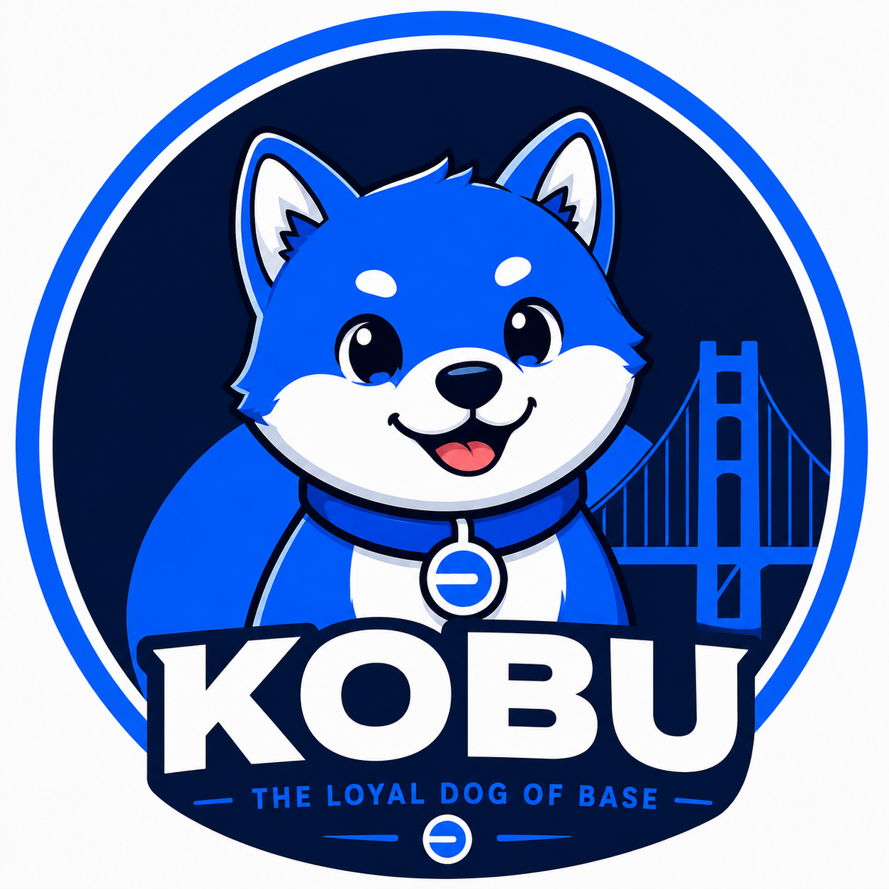

KOBU is a community-driven meme token deployed on the Base blockchain. The project follows a fixed supply model designed for transparent on-chain distribution.
Name: KOBU
Symbol: KOBU
Network: Base
Maximum Supply: 1,000,000,000 KOBU
Total Supply: 1,000,000,000 KOBU
Launch Date: 14 July 2026
Contract:
0xb20000000000000000000086aa4aeb4a32507601
KOBU uses a fixed supply of 1,000,000,000 tokens. No additional token minting is planned beyond the deployed supply. The project is community-focused and operates as a meme token on the Base ecosystem.